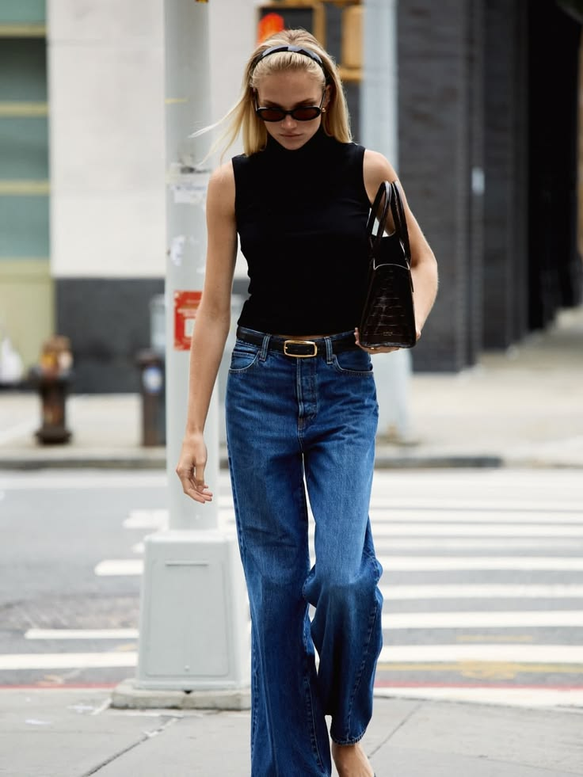
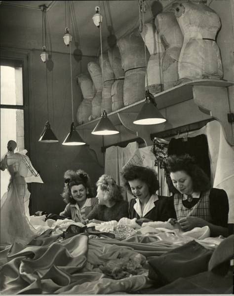
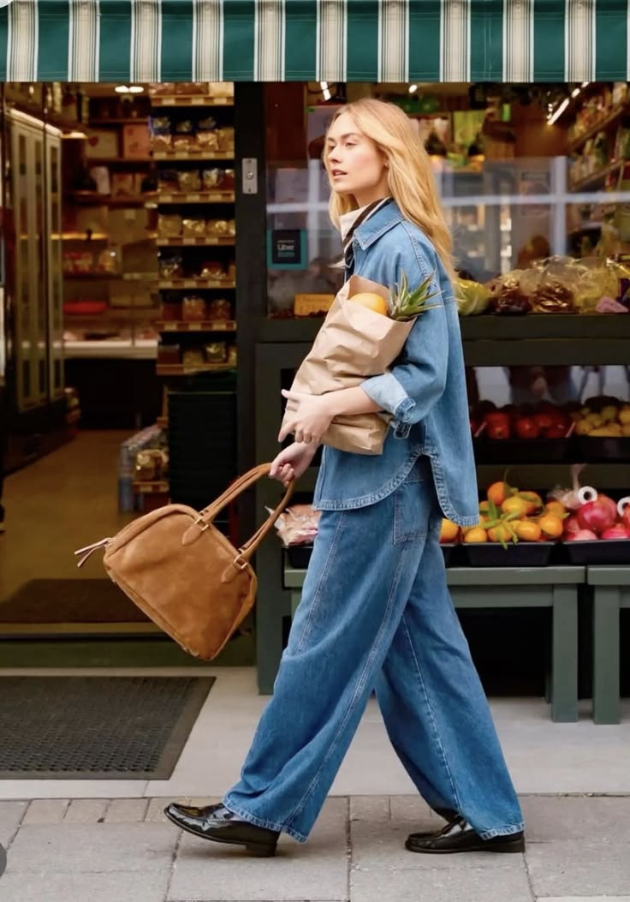
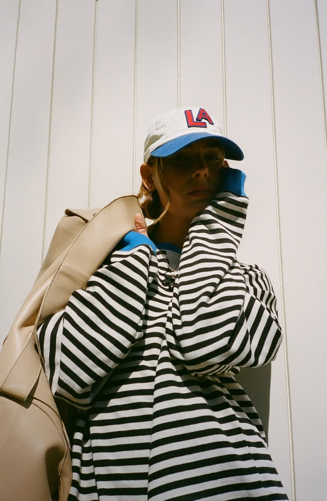

Minimalism
Minimalist fashion focuses on simple silhouettes, neutral colors and timeless pieces. It is often associated with a clean and elegant aesthetic.

Exploring how fashion has changed through the years and how it continues to influence our identity.
Fashion has changed constantly throughout history. The clothes people wear can reflect their culture, lifestyle, personality and even social changes.
Today, fashion is influenced by designers, celebrities, social media and different cultures around the world. Because of this, trends can become popular very quickly.

Fashion trends change constantly, but some styles continue to influence the way people dress.
Minimalist fashion focuses on simple silhouettes, neutral colors and timeless pieces. It is often associated with a clean and elegant aesthetic.

Denim is one of the most recognizable materials in fashion. Jeans, jackets and skirts made from denim can be styled in many different ways.

Oversized clothing has become popular because it combines comfort with a modern and relaxed aesthetic.

Throughout history, many designers have influenced the way people understand fashion and personal style.
To learn more about fashion history, visit Vogue .
Fashion is constantly changing, but personal style remains unique.